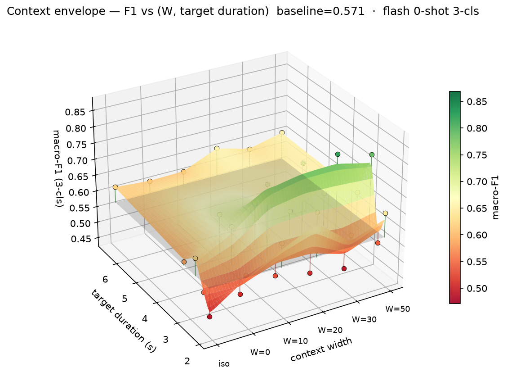

Phase 1 — Gemini Flash and Claude Haiku, zero-shot and 18-exemplar few-shot, 3-class and 6-class. Fast, cheap, and tells us where the signal is reachable through a closed-weight API before we touch local fine-tuning.
| model | shot | 3-cls F1 | 6-cls F1 | 3-cls ρ | 6-cls ρ |
|---|---|---|---|---|---|
| random (uniform) | baseline | 0.350 | 0.183 | +0.101 | −0.044 |
| majority-class | baseline | 0.170 | 0.049 | 0.000 | 0.000 |
| ParlaSent zero-shot (stock) | baseline | 0.384 | 0.215 | +0.298 | +0.410 |
| Gemini Flash 3.8 | few-shot | 0.607 | 0.411 | 0.503 | 0.568 |
| Gemini Flash 3.8 | 0-shot | 0.592 | 0.349 | 0.481 | 0.596 |
| Claude Haiku 4.5 | few-shot | 0.534 | 0.337 | 0.420 | 0.448 |
| Claude Haiku 4.5 | 0-shot | 0.467 | 0.213 | 0.334 | 0.341 |
Baselines on the same 170-instance eval set.
Subset is class-balanced by construction (29 per 6-class), so majority-class is the weakest
baseline here and random uniform is the honest floor. ParlaSent zero-shot
is the stock classla/xlm-r-parlasent head applied to ROG transcripts with no fine-tune —
it barely beats random on this balanced subset, i.e. parliamentary-trained sentiment transfers weakly to
dialogue when all classes are equally represented. Flash few-shot beats ParlaSent ZS by +0.22 F1_3.
Full numbers: runs/baselines/baselines_subset170.md.
max_tokens 50 → 500 so the model's mandatory reasoning had room.Same prompt for both models; only the label list changes between 6cls and 3cls.
Few-shot prepends 18 fixed exemplars (3 per 6-class, drawn from train, speaker-disjoint from eval)
as alternating user/assistant turns; 3-class runs relabel the same exemplars to the collapsed label.
Request body includes "usage":{"include":true} so OpenRouter returns populated cost.
Source: scripts/2_probe_text/02_run_openrouter_text.py.
System message (6-class)
You classify Slovenian spoken-dialogue utterances by sentiment. Choose exactly one label from this list: - predominantlyNegative - mixedNegative - neutralNegative - neutralPositive - mixedPositive - predominantlyPositive Reply with only the label. No explanation.
System message (3-class) — same wording, label list becomes
- negative / - neutral / - positive.
User turn (target and each few-shot exemplar)
Utterance: {text}
Few-shot layout
system : <system prompt>
user : Utterance: {exemplar_1_text}
assistant: {exemplar_1_label}
user : Utterance: {exemplar_2_text}
assistant: {exemplar_2_label}
... (18 exemplars total in 6-cls; the same texts, collapsed labels in 3-cls)
user : Utterance: {target_text}
Phase 2 — give the probe more axes: bigger models (do the frontier OpenAI slugs find more signal than Flash?) and conversational context (does showing neighbours around each target help?). Two knobs, back-to-back.
GPT-4o, GPT-5, and GPT-5.6-luna, same prompts as Flash/Haiku. Flash fshot 3-cls = 0.607 still holds the crown. GPT-5 fshot sits ~−0.03 lower at ~2× the Flash cost; its 6-cls fshot parse rate drops to 0.77 as reasoning exhausts the token budget before a clean label. Cheap Luna 0-shot matches GPT-5 0-shot at ~1/25 the cost — cost-efficient tier is where the signal lives, not the frontier.
| model | shot | 3-cls F1 | 6-cls F1 | 3-cls ρ | 6-cls ρ | parse | cost |
|---|---|---|---|---|---|---|---|
| Gemini Flash 3.8 (prev) | few-shot | 0.607 | 0.411 | 0.503 | 0.568 | 1.00 | $0.33 |
| Claude Haiku 4.5 (prev) | few-shot | 0.534 | 0.337 | 0.420 | 0.448 | 1.00 | $0.03 |
| GPT-5 | few-shot | 0.579 | 0.375 | 0.466 | 0.595 | 0.77* | $0.41 |
| GPT-5 | 0-shot | 0.552 | 0.344 | 0.451 | 0.530 | 0.91 | $0.31 |
| GPT-4o | few-shot | 0.551 | 0.377 | 0.436 | 0.529 | 1.00 | $0.23 |
| GPT-4o | 0-shot | 0.531 | 0.292 | 0.451 | 0.522 | 1.00 | $0.03 |
| GPT-5.6-luna | 0-shot | 0.552 | 0.342 | 0.495 | 0.571 | 1.00 | $0.01 |
| GPT-5.6-luna | few-shot | 0.526 | 0.322 | 0.424 | 0.465 | 1.00 | $0.02 |
Same 170-instance subset, same prompts, same parse rules.
* GPT-5 fshot 6-cls drops to 77% parse rate — reasoning exhausts the 500-token
budget before emitting a clean label on long few-shot prefixes. Flash fshot 3-cls (0.607) still
holds the single-utterance crown. GPT-5 fshot 3-cls = 0.579 is within 0.03 of Haiku fshot and
~2× the cost of Flash. Luna 0-shot 3-cls (0.552) matches GPT-5 0-shot within noise at ~1/25 the
cost — the cheap current-gen tier is where the signal lives.
Full numbers: runs/batch_FULL_20261117_104225/batch_results.csv.
| model | context | shot | 3-cls F1 | 6-cls F1 | 3-cls ρ | 6-cls ρ |
|---|---|---|---|---|---|---|
| Gemini Flash 3.8 | iso (single-utt) | 0-shot | 0.592 | 0.349 | 0.481 | 0.596 |
| Gemini Flash 3.8 | ctx3 (prev · target · next) | 0-shot | 0.639 | 0.380 | 0.603 | 0.702 |
| Claude Haiku 4.5 | iso (single-utt) | 0-shot | 0.467 | 0.213 | 0.334 | 0.341 |
| Claude Haiku 4.5 | ctx3 (prev · target · next) | 0-shot | 0.515 | 0.235 | 0.434 | 0.534 |
| matched-protocol delta (ctx3 − iso at same model, shot, scheme) | ΔF1_3 | ΔF1_6 | Δρ_3 | Δρ_6 |
|---|---|---|---|---|
| Gemini Flash 3.8 · 0-shot | +0.048 | +0.031 | +0.122 | +0.106 |
| Claude Haiku 4.5 · 0-shot | +0.048 | +0.022 | +0.101 | +0.192 |
Context window = previous + target + next utterance from the same conversation, joined on
file_id+start_t. Target is marked [TARGET] at end-of-line; speakers collapsed to
SPK1/SPK2. All 170 targets have both neighbours present (zero boundary pads).
Flash ctx3 0-shot (0.639) beats Flash iso few-shot (0.607), the previous crown,
and closes ~1/3 of the gap to the IAA ceiling of 0.699. Same +0.048 ΔF1_3 on Haiku — the lift is model-agnostic.
Caveat worth taking seriously: 75 of 170 windows (44%) are single-speaker (one talker's utterance
split into three). The lift is real on the mixed-speaker subset AND on the single-speaker subset — pending slice
analysis — but a stronger context window (longer neighbours, longer in words) is expected to amplify this.
Full numbers: runs/batch_CTX_20261117_124601/batch_results.csv.
We then refined the context builder. Current neighbours were ~1 s (2–3 words) — not
real conversational structure. Switched to a word-count-threshold accumulator: pull utterances per side
until cumulative word count ≥ W, sweep W as a third axis (10 · 20 · 30 · 50 words) to find a peak /
plateau like the duration envelope in Report 6. Code: 03_run_openrouter_text_context.py --context-words W.
Sweep across W ∈ {10, 20, 30, 50} words per side (plus the iso and W=0 anchors from earlier). Flash is our primary probe going forward — most sensitive, closest to the IAA ceiling. Haiku rows retained for cross-check so we can tell "model-specific win" from "real signal".
| W | Flash 3-cls F1 | Haiku 3-cls F1 | Flash 6-cls F1 | Haiku 6-cls F1 | Flash 6-cls ρ | Haiku 6-cls ρ |
|---|---|---|---|---|---|---|
| iso (no ctx) | 0.592 | 0.467 | 0.349 | 0.213 | 0.596 | 0.341 |
| W=0 (±1 utt) | 0.639 | 0.515 | 0.380 | 0.235 | 0.702 | 0.534 |
| W=10 | 0.674 | 0.541 | 0.372 | 0.304 | 0.717 | 0.639 |
| W=20 | 0.685 | 0.569 | 0.366 | 0.335 | 0.708 | 0.616 |
| W=30 | 0.661 | 0.571 | 0.394 | 0.368 | 0.759 | 0.644 |
| W=50 | 0.670 | 0.562 | 0.392 | 0.362 | 0.743 | 0.624 |
| IAA ceiling | 0.699 | — | 0.625 | — | — | — |
All rows 0-shot, same 170-instance subset, same prompts. W is the per-side word-count threshold;
each side accumulates neighbour utterances in chronological order until the cumulative word count crosses W.
W=0 preserves the legacy ±1-utterance behaviour. Single-speaker windows drop 75 → 26 → 3 → 0 as W goes
0 → 10 → 20 → 30, so by W=20 almost every window contains real turn-taking. Full numbers:
docs/ref_results/text_context/CTX_W{0,10,20,30,50}_...csv.
Context envelope — F1 vs (context W, target feature).
Transparent gray plane is the iso (no-context) F1 averaged across bins; stems pierce above the plane where context
helped (green) or dipped below (red). 3-D render from scripts/6_sent_duration/06_rog_dia_explorer.ipynb
(paired with .py).


170-subset qualifier: all comparisons on this page use data/subset_174_seed42_v2.jsonl
— a class-balanced (29 per 6-class) and ≥2 s-filtered speaker-disjoint eval subset drawn from ROG
dev+test. Not the natural ROG distribution (where majority alone is 0.27). Absolute F1 should not be compared to the
full-ROG numbers in Report 4 (n=434, 2 s-filtered) or Report 6; direction of deltas transfers. The 2 s filter cost
only ~0.008 F1_3 on ROG-test per the Report 4 compare, so the qualifier is mostly about balance, not
length. Validation step on full-ROG test (n=2233) for the winning W is queued.